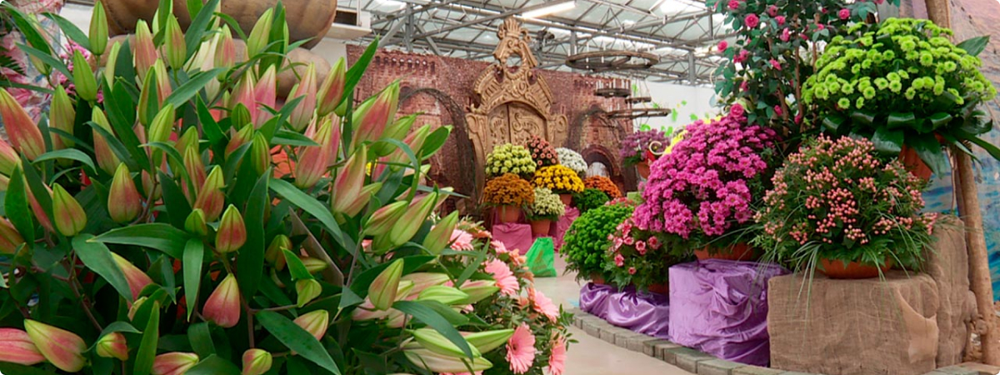

Выставка цветов в Садовом Центре “Галантус”
Уточнить сроки проведения и условия участия 8 800 301 28 40
Тематическую выставку и форум, посвященные тенденциям цветочной отрасли, мы проводим с 1996 года.
Традиционное время проведения - февраль. Несколько раз выставка проводилась дважды в год. А в 2021 году, из-за эпидемиологических ограничений ее решено было провести в апреле, и не в здании Садового Центра, а на открытой площадке перед ним.
Экспозиция занимает площадь в несколько гектаров.
Подготовка к мероприятию начинается за несколько месяцев. Дизайнеры и флористы разрабатывают концепцию, подбирают подходящие цветы и создают оригинальные арт-объекты. Все для того, чтобы удивить гостей. За много лет проведения выставок, наши посетители стали очень искушенными и ожидают увидеть что-то необыкновенное.
В разное время на выставке “Галантус” были представлены экзотические протеи, триллиумы, спрекелии и другие редкие растения.
Тематики, в которых проходили выставки: «Цветочная сказка», «Средневековье», «Цветочная романтика», «Кёкенхоф», «Дыхание весны».
Выставки цветов в “Галантусе” ежегодно посещает более 50 тысяч человек.
К нам приходят целыми семьями, в том числе и с детьми. Для них мы организовываем конкурсы, мастер-классы, устраиваем мини-зоопарк с разными животными.
Выставка цветов - это идеальные декорации для фотосессий, поэтому фотографы и их клиенты являются нашими постоянными гостями. Ну где еще можно сфотографироваться в окружении 30 видов орхидей, или на фоне фрезий всех цветов радуги?!
Для профессионалов цветочного рынка в рамках выставки проводятся конференции и деловые встречи.
Они получают возможность узнать о новых сортах цветов, а также представить свои продукцию.
Кроме калужских питомников и тепличных хозяйств, в выставке участвуют цветоводы из других регионов России, а также из стран СНГ.
Уточнить сроки проведения выставки и условия участия можно по телефону: 8 (800) 301-28-40